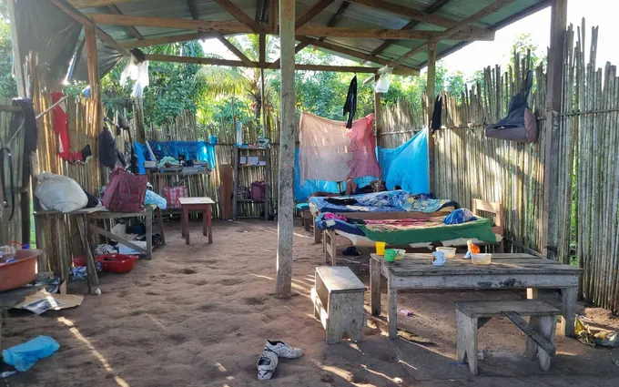
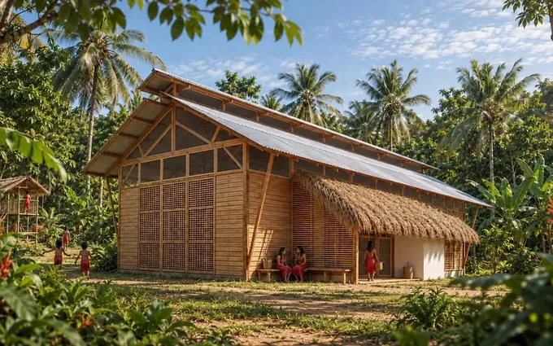
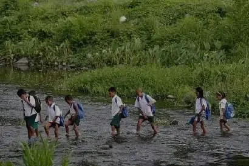
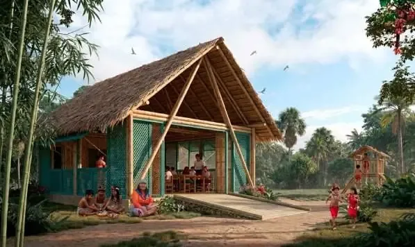
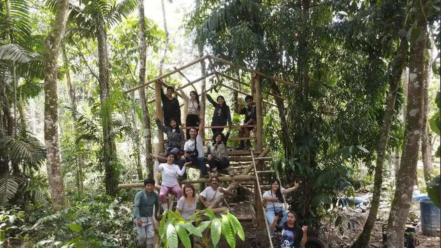

Campaña de construcción comunitariaEtapa 2 en curso
Sembremos espacios deAprendizaje Awajún
¡La construcción ya está en marcha! Te invitamos a sumarte a la creación de una residencia estudiantil, un lugar seguro donde vivir, alimentarse, descansar y seguir aprendiendo.
Wawaín y San Rafael — Imaza, Bagua, Amazonas.
Casa Semilla Awajún · residencia estudiantil
Etapa 1 · S/ 4,600Cubierta
Con donaciones y el aporte de aliados.
Etapa 2 · en cursoTechado y cerramientos
S/ 100de S/ 2,900
3 %de la etapa 2
El proyecto
Casa Semilla Awajún · residencia estudiantil
Un lugar para quedarse y seguir aprendiendo
Un módulo de madera y bambú sobre cimentación de concreto, pensado para que niñas, niños y jóvenes de comunidades alejadas puedan dormir, alimentarse, estudiar y compartir en un espacio seguro. Su espacio flexible al centro la hace también un lugar para seguir aprendiendo.

Hoy
Lo que construimos juntos120 m²
área a construir
28
camas
1
cocina
1
baño
La comunidad. Wawaín decidió en asamblea construir la residencia y no esperó a tener todo resuelto. Las familias escogieron la madera, la curaron en una poza que armaron junto a la escuela, juntaron cemento y herramientas y organizaron las faenas. La obra es suya desde el primer día.
La campaña. Lo que suma la campaña es lo que el monte no da: uniones y conectores para que la estructura dure, herramientas de corte, preservantes, mallas para cerrar los ambientes y, al final, agua y luz. Cada sol se convierte en un material concreto y queda registrado con su comprobante.
Ver la meta y en qué se convierteNosotros acompañamos. Paisajes Educativos y Manifiesto Lab aportan asistencia técnica en uniones, sistema constructivo y diseño.
Así avanza Wawaín
Del terreno a la estructura: la obra avanza hito por hito, desde la poza de curado hasta el armado de la estructura. Toca una foto para verla en grande.
Una apuesta por acortar brechas y mejorar la seguridad de nuestros niños en la Amazonía
En Wawaín, la comunidad awajún del distrito de Imaza decidió no esperar. Decidió construir. Se organizó, reunió madera, cemento y herramientas, y comenzó las faenas para levantar una residencia para los estudiantes que viven lejos de la escuela. Ahora necesitamos poner lo que falta: el material técnico que el territorio no puede proveer.
Conoce másVer menoscómo llegamos hasta Wawaín
El proyecto no empieza con un plano: empieza con dos años de trabajo en el territorio y con lo que la propia comunidad puso sobre la mesa.
El vínculo
Enseña Perú
La red de docentes de Enseña Perú en Imaza abre la puerta a las escuelas de la zona y al contacto con Wawaín.
24 nov 2025
Taller docente
60 profesores de la zona trabajan sobre infraestructura educativa y prioridades de sus escuelas.
2025–2026
Talleres con la comunidad
Madres e infancias en Umukai y estudiantes de secundaria en Chiriaco definen qué necesita la residencia.
Feb 2026
Aula Viva Awajún
El workshop que traduce todo lo anterior en el diseño de Casa Semilla y en el sistema constructivo.
12–16 oct 2026
Jornada de construcción
Nueve voluntarios y la comunidad levantaron la estructura de la casa.
Largas distancias y situaciones de vulnerabilidad

La distancia no debería ser una barrera para seguir aprendiendo.
¿Sabías que hay estudiantes que cruzan un río para llegar a la escuela? Para ellos, estudiar implica recorrer grandes distancias, atravesar caminos que no siempre son fáciles y, muchas veces, permanecer lejos de casa. Lo hacen porque quieren seguir aprendiendo.
Hoy, muchos deben quedarse en espacios que no cuentan con las condiciones necesarias para dormir, alimentarse, asearse y estudiar. En Wawaín, la residencia busca cambiar esa realidad.
La escuela tiene más estudiantes que habitantes la comunidad: muchos llegan de otras comunidades, en bote por el Chiriaco y caminando.
Wawaín, en cifras
- 294habitantes
- 334estudiantes matriculados
- 3escuelas
- 1 horade caminata, los más lejanos
- En botepor el río Chiriaco
Conoce másVer menoslo que pasa en la escuela rural del país
Lo que pasa en la escuela rural del país
1 de cada 5
estudiantes rurales logra aprendizajes satisfactorios. En las zonas más alejadas, 1 de cada 10.
62.6 %
de las deficiencias de infraestructura educativa se concentra en escuelas rurales.
16,917
escuelas unidocentes hay en el Perú.
Solo 7 %
de los locales educativos del país tiene cerrada su brecha de infraestructura.
MINEDU (2023, 2024) · ComexPerú, análisis de datos de Minedu (dic. 2024) · PRONIED–UGM, «Innovación educativa en Frontera» (2026) · Memoria del proyecto.
La campaña y la obra avanzan en paralelo
La recaudación no se detiene cuando empieza la construcción. La obra avanza por etapas: cada aporte que llega se destina a la etapa siguiente, y la campaña sigue abierta hasta completar la casa.
Hecho
Set–oct 2026
Lanzamiento y primera obra
Se lanzó la campaña. Cimentación, laboratorio de construcción y estructura, levantados junto a la comunidad.
● En proceso
Nov–dic 2026
Segunda etapa
Techado y cerramientos. La recaudación continúa.
○ Meta
2027
Casa Semilla Awajún lista
Agua, luz y acabados. Cierre de la obra e inauguración de Casa Semilla Awajún.
Un mismo proceso en dos etapas
Wawaín y San Rafael no compiten por el mismo dinero. Wawaín está en obra ahora; San Rafael arranca con el excedente de esta fase y con lo aprendido en ella.
Fase 1 · en obra
Wawaín
Casa Semilla Awajún, residencia estudiantil. 120 m², 28 camas. Es la fase que esta campaña financia.
Fase 2 · después
Semillero de aprendizaje. 25 m², 60 beneficiarios. Empieza con el excedente de la fase 1.
Más adelante
El modelo
Las dos obras dejan un antecedente documentado y transferible a otras comunidades amazónicas.
Conoce másVer menosel proyecto de San Rafael, ya diseñado

Una biblioteca y un aula abierta
Construida en bambú Guadua con techo de palma yarina. Son aulas modulares que se adaptan a las actividades de la comunidad, donde los libros dialogan con los saberes awajún.
Comunidad: ≈ 700 habitantes, 3 escuelas, 255 estudiantes. Acceso: Chiriaco y río Marañón. El proyecto ya está diseñado: arranca cuando se cierre la meta de Wawaín.
Súmate
¿Cómo quieres sumarte?
Tu apoyo impulsa más que una construcción, impulsa oportunidades de educación.
Haz tu aporte
Invitación abierta: cualquier persona puede sumarse con el monto que pueda, sin mínimo. Es la vía más frecuente.
- Tu aporte suma
- Un aporte libre, sin mínimo, como donación a Paisajes Educativos.
- Tu apoyo deja huella
- Transparencia: sumamos cada aporte al avance de la campaña y mostramos en qué se convierte, con evidencia de obra.
- ¿Quieres sumarte?
- Envías tu donación a través del formulario, con tus datos y la imagen de tu comprobante, o lo coordinas por WhatsApp.
¿Por qué te pedimos tus datos? Paisajes Educativos solo puede recibir dinero bajo el concepto de donación. Por eso, antes de que dones necesitamos algunos datos tuyos: así dejamos constancia de cada aporte, lo sumamos al avance de la campaña y podemos rendir cuentas. Las donaciones de personas no generan comprobante tributario.
Envía tu donación por el formulario
Puedes enviar tu donación a través de este formulario: deja tus datos y la imagen de tu comprobante. ¡Gracias por sembrar con nosotros!
Coordina por WhatsApp
Escríbenos y coordinamos tu donación por chat, con el equipo de la campaña.
Escribir por WhatsAppConstruye con tu empresa
Para empresas que pueden auspiciar la obra, en dinero o en materiales del listado técnico. Cada nivel incluye todo lo del anterior y suma algo más.
- Tu empresa puede sumar
- Un monto económico o materiales de construcción valorizados a precio de mercado.
- Tu apoyo deja huella
- Visibilidad y reporte de impacto según el nivel; certificado de donación deducible desde el nivel Bosque.
- ¿Quieres sumarte?
- Eliges el nivel, lo conversamos por WhatsApp y formalizamos el aporte.
- Mención en la inauguración
- Mención en redes sociales
- Reporte de cierre con evidencia de obra
- Todo lo de Semilla
- Certificado de donación deducible
- Logo en materiales de campaña
- Kit de publicaciones en redes durante el proyecto
- Todo lo de Bosque
- Logo en la obra construida
- Historias y reel durante toda la campaña
- Kit de fotos e historia para tu comunicación
- Mención especial en el video de cierre
Frutos: donar materiales en vez de dinero
¿Tu empresa puede aportar materiales? También puedes construir con lo que ya tienes.
Frutos no es un nivel aparte, es otra forma de hacer el mismo aporte. El material se valoriza a precio de mercado y ese monto ubica al donante en el nivel que le corresponde, con los mismos beneficios.
- Fijaciones y tornillería
- Herramientas de corte
- Preservantes para madera
- Mallas y cerramientos
- Aparatos sanitarios
- Cableado eléctrico
Si tienes un material que no está en esta lista, también puede servir: se revisa caso por caso con logística antes de confirmar la donación.
Coordinar una donación de materialesCertificado de donación
Deducible ante SUNAT, desde el nivel Bosque.
Reporte de impacto
Rendición con comprobantes y evidencia fotográfica de obra.
Visibilidad
En la obra, en materiales de campaña y en redes, según el nivel.
El detalle completo de beneficios por nivel está en el brochure de la campaña.
Trabajemos juntos
Para organizaciones y colectivos que pueden asumir tareas concretas del proyecto, sin que medie un aporte económico.
- Tu organización puede sumar
- Gestión, coordinación, operación o logística de una parte del proyecto.
- Tu alianza abre oportunidades
- Alianza conjunta, visibilidad como aliado y reporte del trabajo común.
- ¿Empezamos?
- Agendamos una conversación de 30 minutos para definir el alcance.
Involucra a tu equipo
Para empresas que quieren involucrar a su equipo en la obra, más allá del aporte económico.
- Tu equipo puede sumar
- Tiempo, equipo o experiencia: voluntariado corporativo, asesoría técnica, logística.
- Tu equipo deja huella
- Una experiencia diseñada a medida con tu equipo y reporte de impacto (RSC / ESG).
- ¿Quieres sumarte?
- Coordinamos una sesión para diseñar la experiencia y su calendario.
TransparenciaPaisajes Educativos y Manifiesto Lab se unen para sumar esfuerzos y aportes que hagan posible esta obra. Aquí te contamos cómo rendimos cuentas y respondemos tus dudas.En qué se convierte cada aportePreguntas frecuentesQuiénes están detrás
Ver transparencia
Con tu aporte, siembras algo que crece
Un espacio donde niñas y niños awajún aprenden sin dejar de ser quienes son. Escríbenos para recibir el dossier completo y conversar sobre cómo sumarte.